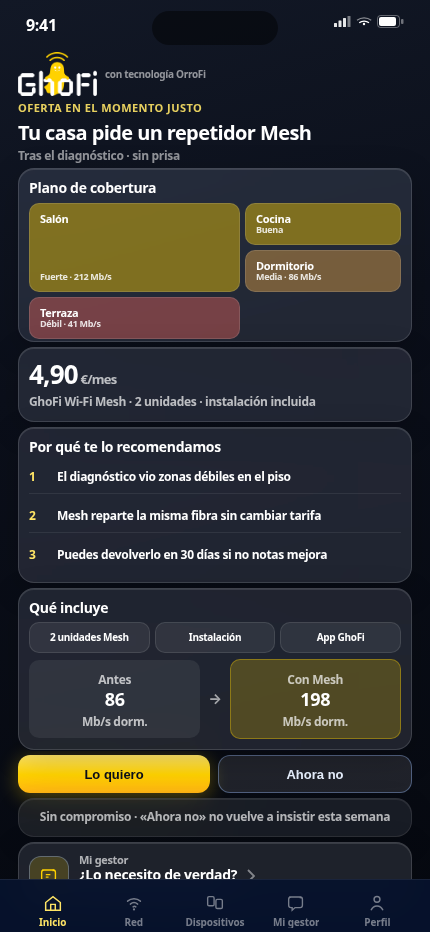
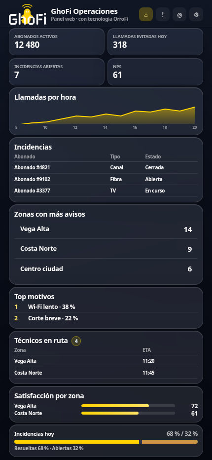

Sus abonados están contentos. Su soporte sale más barato.
La aplicación sale con su marca: su logotipo, sus colores, su nombre en el App Store y en Google Play. El abonado solo le ve a usted; OrroFi se queda entre bastidores.
OrroFi es una aplicación lista con su marca. Mejora el internet en casa de sus clientes y hace que hablar con usted sea sencillo, rápido y humano.


Un canal directo con el cliente
Hoy, entre el operador y el abonado, hay una cola al teléfono, cartas que nadie lee y SMS que se pierden entre la publicidad. OrroFi quita esa pared. Su marca vive en el teléfono del cliente, y cualquier aviso importante llega al momento: una avería y el plazo para resolverla, trabajos previstos, la visita del técnico, una factura nueva.

Un asistente en lugar de la cola
Mi gestor conoce el contrato del cliente, sus servicios y el estado de su red en casa. Por eso responde al caso, de día y de noche, en segundos, y no con frases aprendidas. Cuando la pregunta necesita a una persona, el asistente pasa la conversación a su empleado con todo el historial, y el cliente no tiene que repetirlo todo.

La red móvil y el internet de casa en una sola ventana
Su abonado ve el Wi‑Fi de casa, las líneas móviles de la familia, los bonos y las facturas en una sola aplicación con su marca. Cuando una persona lo tiene todo en un sitio, llama menos a soporte y se va menos a la competencia.
El asistente entiende dónde está el problema, en casa o en la red móvil, y lo resuelve antes de la llamada a soporte. Si al abonado se le acaban los gigas, le ofrece un bono justo en ese momento, sin publicidad insistente. Y a un operador pequeño que no tiene aplicación propia, OrroFi le da desde el primer día una aplicación móvil completa, a la altura de las grandes.

Menos llamadas, menos salidas y menos clientes que se van
La mayoría de las quejas de «mal internet» son, en realidad, un aire saturado en casa del cliente. OrroFi encuentra la causa y la quita antes de que el abonado coja el teléfono. Menos llamadas al centro de llamadas, menos salidas en vano de los técnicos. Y, sobre todo, menos clientes que se van a la competencia solo porque «por la noche todo va lento».

Ventas con sentido
La aplicación ve cuándo el cliente de verdad necesita más: un bono de datos, una tarifa más rápida, un repetidor en la habitación del fondo. La oferta llega en el momento justo y se recibe como ayuda, no como publicidad. Y el programa «Invita a un amigo» convierte a los abonados contentos en sus mejores vendedores.

Una aplicación lista con su marca
No necesita un equipo propio de desarrollo ni años de trabajo. OrroFi llega con su nombre y sus colores, con aplicación para iPhone y Android, área web y panel para los empleados. Los datos de los clientes están protegidos según las normas europeas, y la información de sus dispositivos de casa no sale del teléfono.

Cómo empezar
- Cuéntenos su red y sus abonados.
- Conectamos OrroFi a sus sistemas y vestimos la aplicación con su marca.
- Sus abonados instalan la aplicación, y usted ve el resultado.